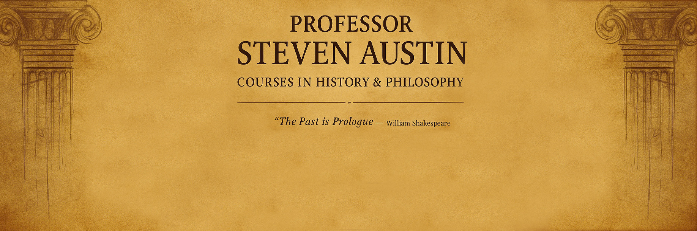

HIST 101
US History to 1877
From colonial foundations through the Civil War and Reconstruction. Explore the birth of a nation and the conflicts that shaped its identity.

Welcome to an exploration of human civilization through the lens of history and philosophy. Here you will find courses that illuminate the past, challenge perspectives, and cultivate wisdom.
From colonial foundations through the Civil War and Reconstruction. Explore the birth of a nation and the conflicts that shaped its identity.
Industrial revolution, world wars, civil rights, and modern America. Trace the transformation into a global superpower.
Five thousand years of civilization: dynasties, philosophies, and revolutions. Discover the Middle Kingdom's profound influence on world history.
Comparative study of major faith traditions: beliefs, practices, and sacred texts. Understanding humanity's spiritual quest across cultures.
Profile Photo
"History is not merely a chronicle of events, but a tapestry of human experience woven with threads of triumph, tragedy, wisdom, and folly."
Professor Steven Austin brings decades of teaching experience and scholarly research to the classroom. Specializing in American history, Eastern civilizations, and comparative religious studies, his courses challenge students to think critically about the forces that have shaped our world.
With a commitment to engaging pedagogy and rigorous inquiry, Professor Austin helps students develop the analytical skills needed to understand complex historical narratives and philosophical questions.
steven.austin@university.edu
Humanities Building, Room 342
Tuesday & Thursday
2:00 PM - 4:00 PM
(555) 123-4567